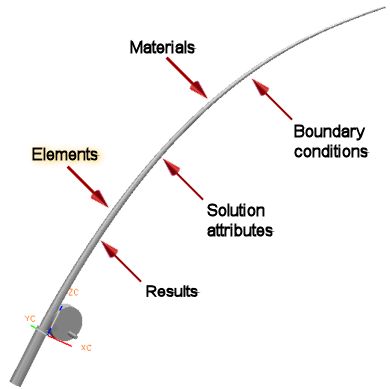

对于解算方案类型 SOL 601，106，支持的非线性单元包括：
3D 4-节点和10-节点四面体实体单元
3D 8-节点和20-节点六面体实体单元
3D 6-节点和15-节点五棱柱实体单元
3D 5-节点和13-节点棱锥实体单元
3D 4-节点和8-节点或3-节点和6-节点轴对称薄壳单元
2D 4-节点和8-节点四边形或3-节点和6-节点三角形薄壳单元
1D 2-节点梁、直梁、杆以及弹簧单元
RBE2 和 RBE3单元
0D 集中质量单元
缝隙单元
要获取更多关于单元的信息，参见高级仿真在线帮助中的物理属性和单元属性→单元和网格的属性。
